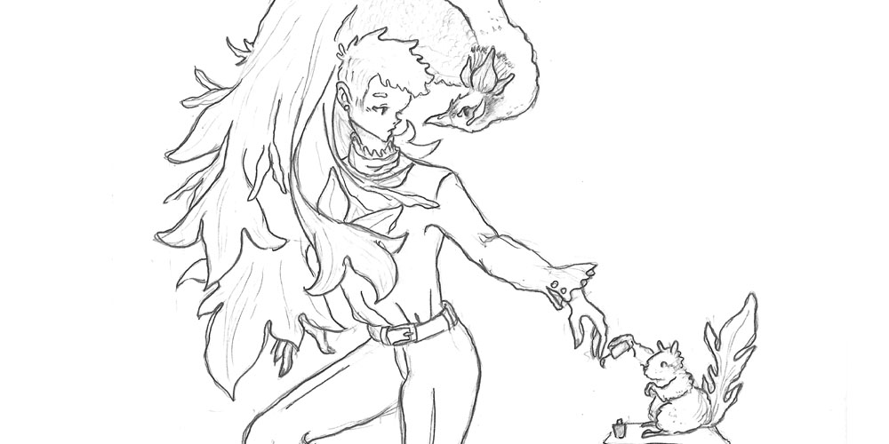
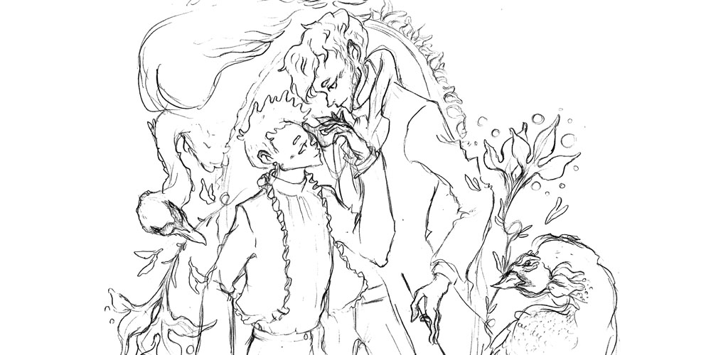
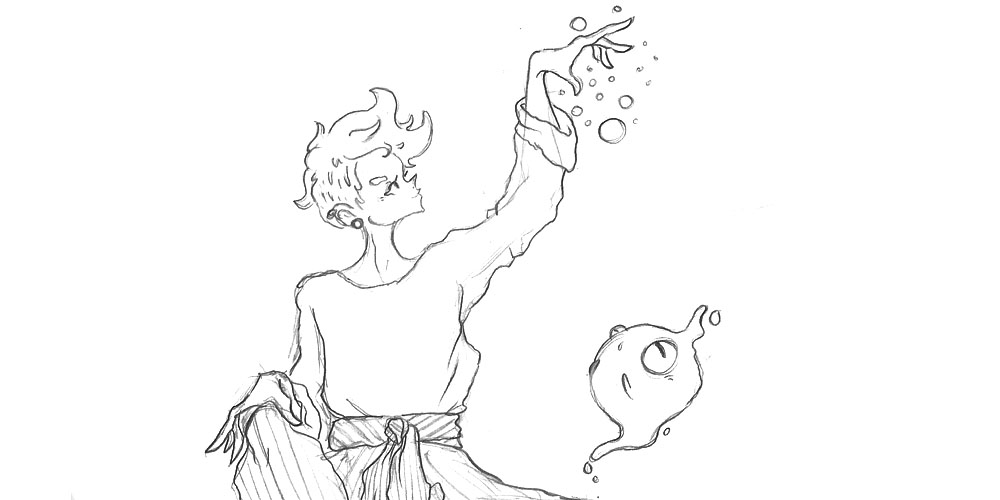
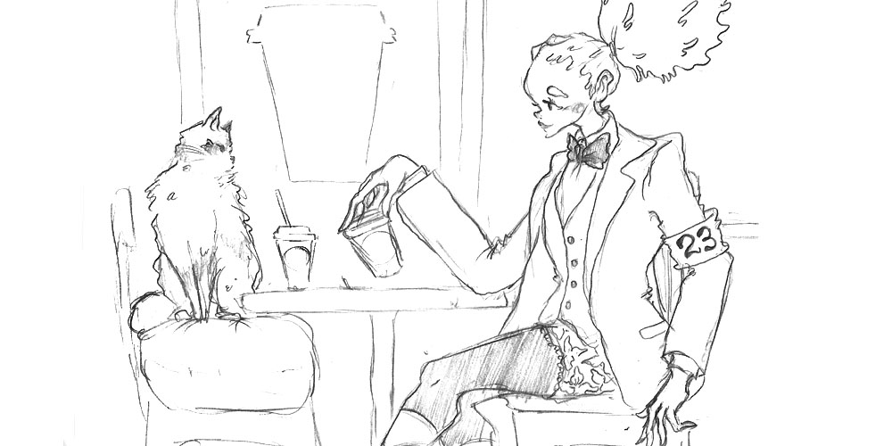

Sketches
Los siguientes dibujos no están terminados, son bosquejos de personajes propios, creados para futuros proyectos.



 Volver al Inicio
Sobre Mí

Mi nombre es Daniel Fernández, tengo 22 años, soy de Valparaíso, Chile.
Actualmente estoy cursando 4to año de Diseño Gráfico en la Escuela de Arquitectura
y Diseño, de la PUCV.
Contacto
Contáctame vía email:
dmfernandezb@gmail.com